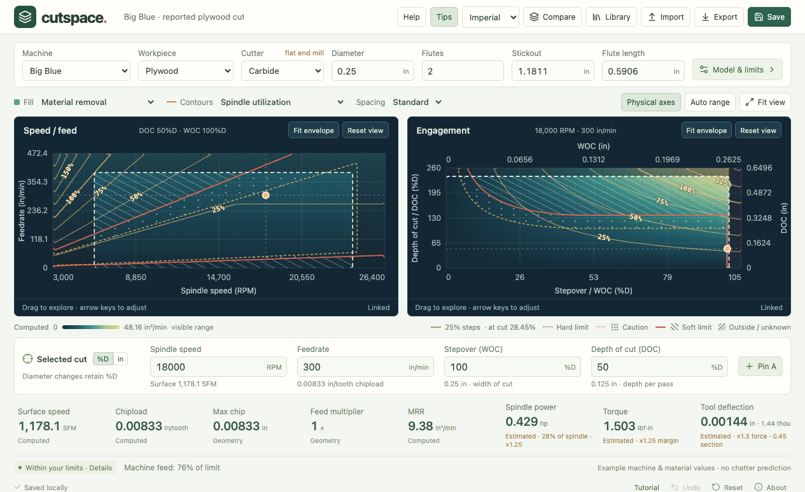
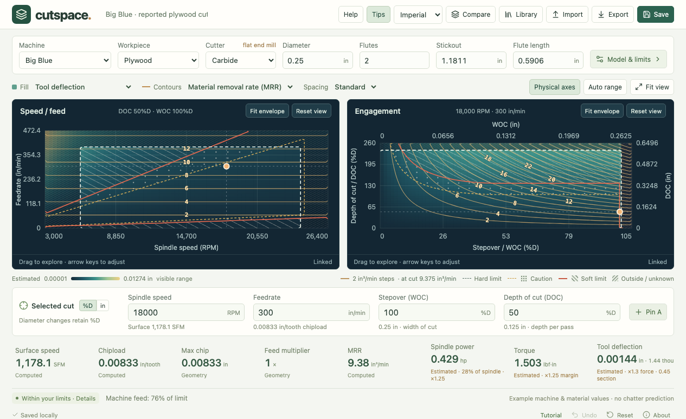
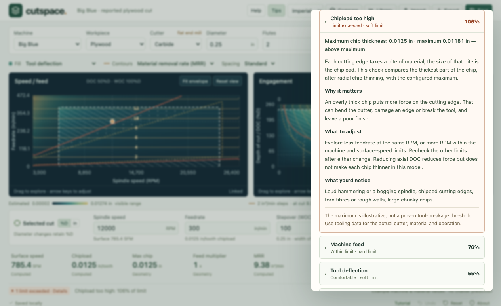
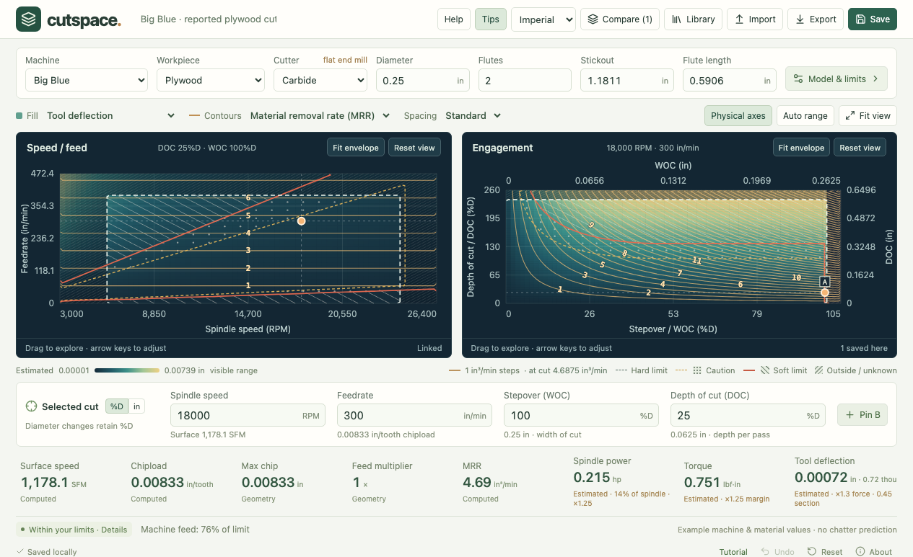
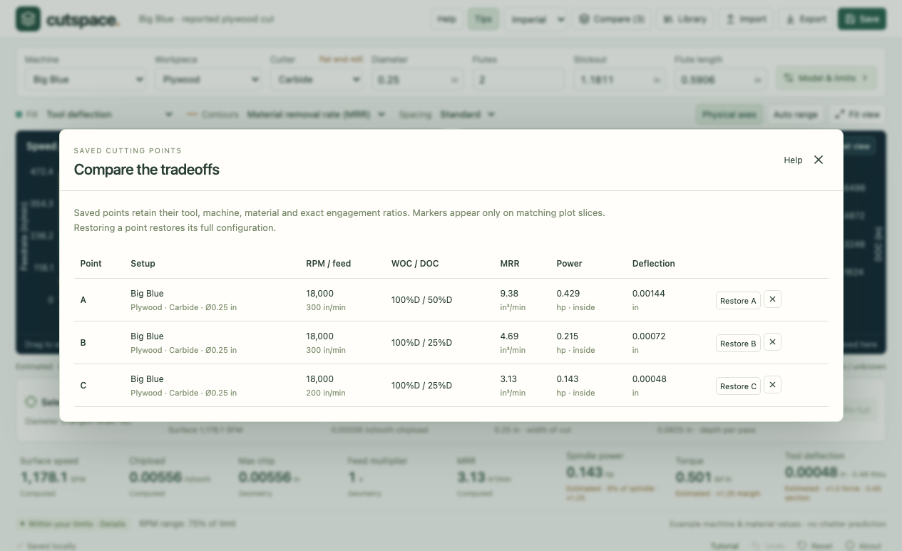

Start with a known setup
For your own job, begin with tooling guidance for the actual cutter and material, or a well-documented cut that has already worked on your machine. Use Cutspace to explore changes around that starting point.
For this lesson, open About at the bottom of the app, then choose Load 300 IPM example. This loads the Big Blue plywood example and switches to imperial units. Loading an example replaces the active experiment; export work you want to keep first. Undo can reverse the load during this session.

This example comes from a reported successful cut on Big Blue. It is a learning reference, not a recipe for every plywood sheet, cutter, or router. The Big Blue machine profile currently copies the illustrative ShopSabre RC4 values; it is not a measured Big Blue spindle model.
| Setting | Value | What it describes |
|---|---|---|
| Cutter | ¼ in carbide, 2 flutes | Diameter, cutter material, and number of cutting edges. |
| Spindle speed | 18,000 RPM | Revolutions per minute. |
| Feedrate | 300 in/min (IPM) | How quickly the cutter travels through the work. |
| Depth of cut (DOC) | 50%D = 0.125 in | Depth engaged along the cutter’s axis. |
| Stepover (WOC) | 100%D = 0.25 in | Width engaged across the cutter; here, a full-width slot. |
| Stickout | ≈1.1811 in (30 mm) | Unsupported length extending from the holder; approximately reported. |
| Flute length | ≈0.5906 in (15 mm) | Length of the cutting portion; an assumed value in this example. |
Workpiece is the material being cut; Cutter is carbide or HSS. Confirm both. Measure stickout and flute length on your actual tool. Longer unsupported length makes bending more sensitive, so do not substitute the overall tool length for stickout. See Harvey’s explanation of tool deflection.
The Metric / Imperial selector changes displayed units, not the physical cut. DOC and WOC retain their percentage of diameter when you change cutter size: 50%D becomes twice as deep if you double the diameter. Recheck the absolute distances and limits after any diameter change; the provisional chip limits do not automatically scale with diameter.
Keep a baseline: click Pin A before changing anything. It stores the cut together with its tool, material, machine, and model settings.
Two views of the same cutting point
The orange point is your current cut. Each graph varies two settings while holding the other two constant. The small text above each graph tells you what is being held constant.
Speed / feed
Horizontal: RPM. Vertical: feedrate. DOC and WOC stay fixed. Move right to spin faster; move up to travel faster.
Engagement
Horizontal: stepover (WOC), how wide a bite the cutter takes sideways. Vertical: depth of cut (DOC). RPM and feed stay fixed. Percent-of-diameter axes are primary; Physical axes shows inches or millimeters on the opposite sides.
Choose Fill → Tool deflection and Contours → Material removal rate (MRR). You can now see an estimated load effect in color and productivity as numbered lines.

- White dashed boundary: the hard limits: RPM range, machine feed and tool reach. Hatched areas fail a hard limit or have unavailable checks.
- Amber and red lines: soft limits such as chipload, power and deflection do not switch from fine to broken at one number, so Cutspace draws two lines. Inside the amber dashed line the cut is comfortably within your limits; between amber and red it is in a caution band (by default the top quarter of each limit), marked with sparse dots; beyond red it exceeds a limit, marked with sparse diagonal lines. Dense hatching is kept for hard limits and unknown regions, so the fill colors always mean the chosen metric. Inspect the selected point’s Details for the reason.
- Fill colors: low-to-high values of the selected metric, using the legend below the graphs. Yellow means “high on this scale”; it does not automatically mean “bad.” Limiting constraint instead colors by the check that dominates.
- Contours: lines joining points of equal value, like elevation lines on a topographic map. The numbers omit units to keep the graph readable; the legend supplies units and the value at your cut. Choose Coarse, Standard, or Fine spacing. This changes line spacing, not the accuracy of the physics model.
- Fit envelope: tightens a graph around its passing region while keeping the current point in view. Reset view restores a broader view. You can also set exact axis bounds in Model & limits → View.
Click or drag on a graph to explore; use the selected-cut fields for exact values. Selecting a new point updates the other graph. The numerical results evaluate that point directly, whereas the boundary is drawn from a sampled grid and is approximate.
Compare numbers as well as colors. Auto range adapts to the visible values across both plots, including values outside the envelope. The same shade can mean a different number after an edit or zoom. Toggle to Fixed scale when you want a consistent color mapping; values beyond its bounds saturate. Pinning a point does not lock the scale.
A metric may be constant in one graph. For example, feed per tooth does not change when only DOC and WOC change, so it has no contour lines in that slice.
Slower RPM does not always mean a lighter cut
At the baseline, the two cutting edges share 300 inches of travel every minute:
Feed per tooth (chipload) = feedrate ÷ (RPM × flutes)
300 ÷ (18,000 × 2) ≈ 0.00833 in/tooth
Now enter 12,000 in Spindle speed, leaving feed at 300 IPM. Commit the edit by pressing Enter or leaving the field. Feed per tooth rises to 0.0125 in/tooth: each edge takes a larger bite because there are fewer revolutions in which to cover the same distance. MRR stays at 9.375 in³/min because depth, width, and travel speed are unchanged. These relationships follow the standard milling formulas.
The app now reports 1 limit exceeded. Click Details and read the expanded Chipload too high check. Scroll within the panel to see Why it matters, What to adjust and What you’d notice.

The 106% reading means the computed chip thickness is about 6% above the configured maximum. It does not mean there is a measured 6% chance of failure. Larger chips can increase cutting force; the threshold itself is an editable assumption, not a proven breakage boundary.
Try restoring 18,000 RPM, or lowering feed while checking the other outputs. Reducing DOC can reduce estimated force and bending, but it does not change feed per tooth or maximum chip thickness in this full-width cut. There is also a minimum-chip check: arbitrarily reducing feed can lead to a rubbing-dominated cut rather than useful chip formation.
If a known successful cut falls outside the envelope, inspect the machine assumptions, tool geometry, material coefficients, and the particular exceeded threshold. Revise an assumption when you have better evidence—not simply to turn the status green. Unknown checks are unresolved information, not passing checks.
Before continuing: return spindle speed to 18,000 RPM, with feed 300 IPM, DOC 50%D, and WOC 100%D.
Try a shallower pass
Change Depth of cut (DOC) from 50 to 25 with the %D entry mode selected. Keep WOC at 100%, RPM at 18,000, and feed at 300 IPM. The depth becomes 0.0625 in.
MRR is the volume removed per minute: depth × width × feedrate. Halving depth therefore halves MRR, from 9.375 to 4.6875 in³/min. In this model, estimated power and deflection also halve. Feed per tooth stays at 0.00833 in/tooth.

This may be useful when estimated bending or spindle load is a concern. The cost is less material removed per pass, so reaching the same final depth needs more passes. MRR measures cutting productivity, not total job time: travel, plunges, acceleration, and toolpath shape also matter.
You can also explore a smaller WOC. Below 50%D, this model applies radial chip thinning: the thickest part of the chip becomes smaller than feed per tooth. Watch both Chipload and Max chip, and read the Feed multiplier, which shows how much some people raise feed to compensate. See Harvey’s chip-thinning explanation. Cutspace does not automatically compensate feed; any increase needs the other checks reevaluated.
A full-width slot cannot become a narrow-engagement cut just by changing a number in Cutspace. Your actual CAM toolpath must create that engagement. Keep WOC at 100% for this lesson.
Save alternative B: at 18,000 RPM, 300 IPM, 25%D DOC, and 100%D WOC, click Pin B.
Keep the tradeoffs side by side
For one more alternative, leave DOC at 25%D and reduce feed from 300 to 200 IPM. Click Pin C, then Compare.

- A: greatest removal rate. 9.38 in³/min, with estimated power 0.429 hp and bending 0.00144 in.
- B: same feed, half the depth. 4.69 in³/min, estimated power 0.215 hp, bending 0.00072 in. It preserves the baseline feed per tooth while reducing engagement.
- C: shallower and slower travel. 3.13 in³/min, estimated power 0.143 hp, bending 0.00048 in. Feed per tooth falls to 0.00556 in/tooth.
There is no universal winner. If a matched, proven setup supports A and productivity matters, it is a useful reference. If you are investigating a finish or bending concern, B illustrates the cost of reducing depth while preserving chip load. C reduces load further, but also changes the bite each tooth takes. The lower numbers alone do not establish that it will cut better.
Each pin keeps its full configuration even as you edit the active cut. Restore A/B/C restores that configuration, not just the point. A saved marker appears on a graph only when it matches the settings held constant in that graph; a missing marker does not mean the pin was lost.
What to look for before settling on a candidate
| Look at | Ask yourself |
|---|---|
| Chipload and Max chip | Does the bite suit my actual cutter and operation? At low radial engagement, am I confusing feed per tooth with chip thickness? |
| Surface speed | Is the cutter’s peripheral speed appropriate for the tool and material? A bigger diameter at the same RPM raises it. |
| MRR | What productivity do I gain, and what extra load or passes accompany it? |
| Power and torque | Do the estimates fit credible machine capacities at this RPM? At fixed MRR, lowering RPM can raise required torque without reducing estimated cutting power. |
| Tool deflection | Is estimated bending large relative to the finish or dimensional accuracy I need? Are stickout and tool geometry correct? This is a static estimate, not a chatter prediction. |
| Details and reach checks | Which check is closest to its limit, and is that limit trustworthy? Is it a soft limit with a caution band, or a hard machine limit? A full-width slot is a normal cut; the reach check only compares depth with flute length and stickout. |
Computed quantities follow the entered dimensions and speeds; Geometry adds the app’s simplified engagement relationship. Estimated power, torque, and deflection depend on coefficients and idealized models. A precisely displayed number is not equally precise knowledge of a real cut.
Name your experiment, use Save for browser-local storage, and Export for a portable file you can keep or import later. Record why you chose the candidate and any changed assumptions in your job notes. Browser storage is not a cross-device backup.
Transfer the chosen values into CAM yourself, checking units and the actual toolpath engagement. Verify the real tool, machine limits, clearances, and workholding; use a controlled trial appropriate to your machine and training before relying on a new setup. Compare the observed cut, finish, and machine behavior with the assumptions, then refine your records.
The habit to build
Start from evidence. Change one setting. Read the resulting chip, load, and productivity values. Inspect the limiting check. Save alternatives before deciding.
Help on a desktop or phone
With a mouse, rest the pointer on a control for a moment and a short tip appears; More… pins the full explanation, and the Tips button in the header turns tips off. For persistent explanations on any device, choose Help, then click or tap an interface item. With a keyboard, focus an item and press Enter or Space. Help mode explains controls without activating them; choose Done to resume editing.
Saving your machine and tools
The Library button saves the current machine, tool or whole cut to your personal library, exports libraries as files, and adds shared libraries published by a group such as a makerspace. Loading a recipe replaces the active experiment; Undo restores it.
About this walkthrough
Screenshots and values captured from Cutspace Explorer 02, model illustrative-static-3, on October 30, 2026. The linked Sandvik and Harvey references support the standard relationships and qualitative principles; they do not validate Cutspace’s provisional machine profiles, material coefficients, or limits. Values shown in screenshots are rounded.